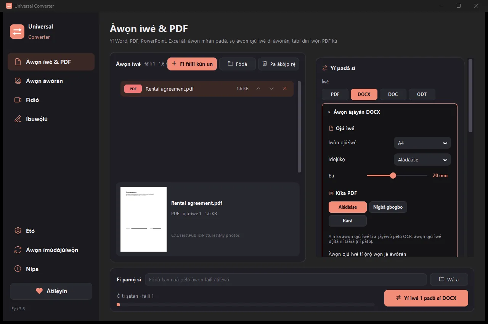

Dín PDF kù sí 100 KB, 200 KB tàbí ìwọ̀n èyíkéyìí tí fọ́ọ̀mù orí ayélujára ń béèrè
Àwọn ojú-òpó iṣẹ́, ìdánwò, yunifásítì àti ìjọba sábà máa ń gba PDF tí kò tó 100 KB, 200 KB tàbí 500 KB nìkan. Tẹ ìwọ̀n tí fọ́ọ̀mù náà gbà, Universal Converter yóò sì dín àwọn àwòrán inú PDF kù títí yóò fi bá a mu, lórí kọ̀ǹpútà tàbí fóònù rẹ, láìgbé ìwé rẹ sí ibikíbi. Bí àwọn ojú-ìwé kò bá lè kéré tó bẹ́ẹ̀, o máa gba ẹ̀yà tó kéré jù lọ, ìṣàfilọ́lẹ̀ náà yóò sì sọ fún ọ.
Bí a ṣe ń fi sórí ẹ̀rọ àti ṣe ìmúdójúìwọ̀n
- Ṣí .dmg tí o gbà sílẹ̀, kí o sì fa Universal Converter sínú Applications.
- Ṣí áàpù náà. Ní ìgbà àkọ́kọ́, macOS yóò dí i nítorí Apple kò buwọ́lu ú: tẹ Done.
- Ṣí System Settings > Privacy & Security, yí lọ sísàlẹ̀, tẹ Open Anyway kí o sì tẹ ọ̀rọ̀ aṣínà rẹ. Ẹ̀ẹ̀kan ṣoṣo ni o máa ṣe èyí.
Ìmúdójúìwọ̀n: bí o bá gbà á láàyè nígbà tí áàpù kọ́kọ́ ṣí, yóò máa ṣàyẹ̀wò ẹ̀yà tuntun ní gbogbo ìgbà tí ó bá bẹ̀rẹ̀, yóò fìdí ìbuwọ́lù díjítà wọn múlẹ̀, yóò sì fi wọ́n sórí ẹ̀rọ nígbà tí o bá yàn.
Bí a ṣe ń fi sórí ẹ̀rọ àti ṣe ìmúdójúìwọ̀n
- Tẹ “Gbà á sílẹ̀ fún Android” lórí fóònù rẹ.
- Ṣí fáìlì tí o gbà sílẹ̀. Bí Android bá béèrè, gba aṣàwákiri tàbí olùṣàkóso fáìlì rẹ láàyè láti fi áàpù sórí ẹ̀rọ.
- Tẹ Install.
Ìmúdójúìwọ̀n: nígbà tí o bá ṣí áàpù náà, ó máa ń ṣàyẹ̀wò bóyá ẹ̀yà tuntun wà, ó sì ń sọ fún ọ nígbà tí ó bá ṣetán. Gbà á sílẹ̀ lọ́nà kan náà kí o sì fi í sórí èyí tí ó ti wà; a ó tọ́jú àwọn ètò rẹ.
Bí a ṣe ń fi sórí ẹ̀rọ àti ṣe ìmúdójúìwọ̀n
- Gba fáìlì .AppImage sílẹ̀.
- Jẹ́ kí ó ṣeé ṣiṣẹ́: tẹ ọ̀tún lé e, ṣí Properties > Permissions kí o sì gbà á láàyè láti ṣiṣẹ́ bí ètò (tàbí nínú terminal: chmod +x Universal-Converter-*.AppImage).
- Tẹ ẹ́ lẹ́ẹ̀mejì. Kò sí ohun tí a fi sórí ẹ̀rọ: fáìlì kan ṣoṣo yìí ni ohun èlò náà.
Ìmúdójúìwọ̀n: bí o bá gbà á nígbà àkọ́kọ́ tí ohun èlò náà ṣí, ó ń wá ẹ̀yà tuntun nígbàkúùgbà tí ó bá bẹ̀rẹ̀, ó ń ṣàyẹ̀wò ìbuwọ́lù oní-nọ́ńbà wọn, ó sì ń rọ́pò fáìlì AppImage níbi tí ó wà.
Bí a ṣe ń ṣe é
- Ṣí Universal Converter.
- Fà àwọn fáìlì rẹ tàbí gbogbo fódà kan sínú fèrèsé, tàbí tẹ “Fi fáìlì kún un”.
- Yan PDF lábẹ́ Yí padà sí, tan Fún PDF pọ̀, kí o sì tẹ ìwọ̀n tí fọ́ọ̀mù náà gbà, fún àpẹẹrẹ 100 KB.
- Tẹ “Yí padà”. A ó fi àwọn fáìlì tuntun pamọ́ lẹ́gbẹ̀ẹ́ àwọn àtilẹ̀wá, tàbí sínú fódà tí o yàn.

Kí ló dé tí a fi ń ṣe é láìsí íńtánẹ́ẹ̀tì?
Universal Converter ń ṣe iṣẹ́ náà lórí ẹ̀rọ tìrẹ. Àwọn fáìlì rẹ ń wà ní ìkọ̀kọ̀, fáìlì ńlá kì í ṣe ìṣòro, ó sì ń ṣiṣẹ́ láìsí íńtánẹ́ẹ̀tì.
Àwọn nǹkan mìíràn tí ó lè ṣe
- Yí PDF padà sí Word
- Yí ìwé Word padà sí PDF
- Da ọ̀pọ̀ fáìlì pọ̀ sí PDF kan
- Fún PDF pọ̀ sí ìwọ̀n tí o yàn
- Yí ojú-ìwé PDF padà sí àwòrán JPG
- Sọ ìwé tí a ṣàyẹ̀wò di fáìlì Word tí a lè ṣàtúnṣe
- Yí àwòrán padà láàárín JPG, PNG, WEBP àti àwọn mìíràn
- Yí ìwọ̀n àwòrán padà tàbí dín wọn kù sí ìwọ̀n fáìlì kan
- Yí ìwọ̀n fọ́tò tàbí ìbuwọ́lù padà sí 20 KB, 50 KB tàbí píksẹ́lì gangan
- Da fọ́tò pọ̀ sí PDF kan
- JPG sí PDF tí kò tó 100 KB
- Da ọ̀rọ̀ inú àwòrán kọ (OCR)
- Fún fídíò pọ̀ láìgbé e sókè
- Yí fídíò padà láàárín MP4, MKV, WebM, MOV àti AVI
- Fi ohùn fídíò pamọ́ bí MP3
- Ṣe GIF láti inú fídíò
- Mú tábìlì láti inú PDF lọ sí Excel
- Yí PDF àkọsílẹ̀ báǹkì padà sí Excel
- Mú tábìlì jáde láti inú ìwé-owó PDF sí Excel
- Buwọ́lu PDF
- Kún fọ́ọ̀mù PDF